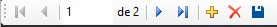

Aquí explicaremos la funció de cada uno de los botones que se encuentran en la esquina izquierda de la pantalla al intentar registrar un libro, lector o prestamo.
Te mandará al primer registro guardado.
Te mandará un registro para atrás.
Indica cuantos registros hay en total.
Te manda un registro hacia adelante.
Te manda al ultimo registro guardado.
Crea un registro nuevo.
Borra el registro actual.
Guarda el registro actual.